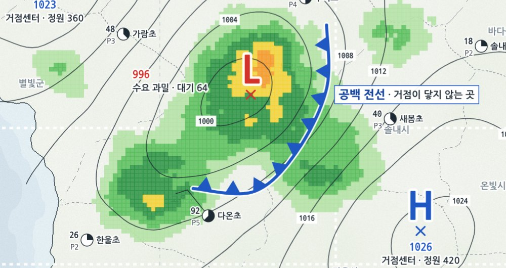
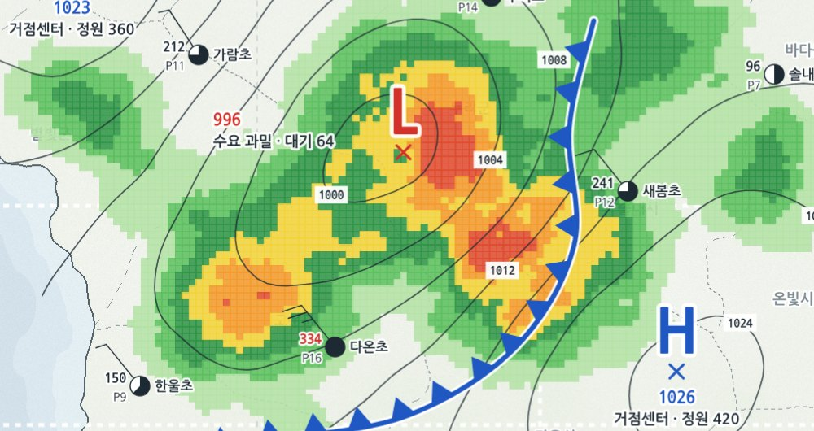
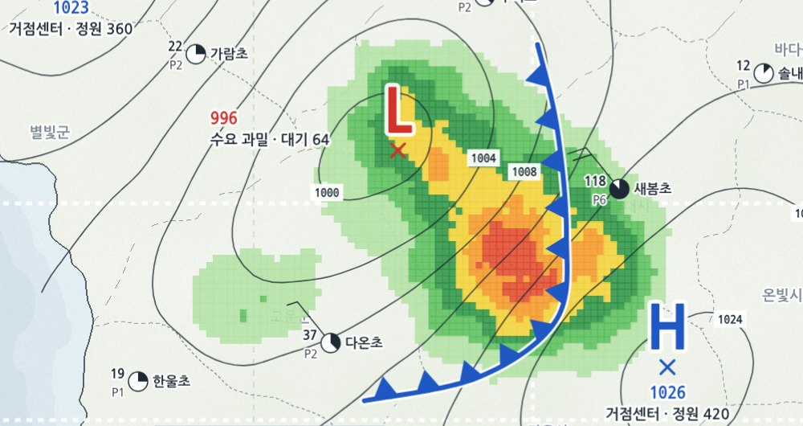

PLAN 2027 · 유아 · 초등교육과 · 하루 세 번 분석
같은 지도를 세 시간대로 겹쳐 봅니다

아침늘봄
출근길 돌봄. 수요는 좁고 옅다

오후늘봄
수요가 가장 넓게 번지는 시간

저녁늘봄
공백 전선이 동쪽으로 옮겨 간다
제25호늘봄 수요 합성 분석도분석 2026.10.02(금) · 하루 전체예보관 ○○○ · ○○교육청 늘봄지원센터 · 가상 예시
07:30아침늘봄13:00오후늘봄18:30저녁늘봄
기호 풀이 · 이 도면을 읽는 법
색은 수요, H는 거점, L은 공백입니다
늘봄 수요 지수신청 ÷ 정원, %
406080100120140+
- H
- 거점 늘봄센터자리가 남는 곳. 공급이 높다
- L
- 수요 과밀 · 공백신청이 정원을 넘는 곳
- ▼▼
- 공백 전선수요가 공급을 넘는 경계
- ◔
- 학교 관측소원 = 참여율, 빨간 숫자 = 대기 인원
제25호늘봄 수요 합성 분석도분석 2026.10.02(금) · 기호 풀이예보관 ○○○ · ○○교육청 늘봄지원센터 · 가상 예시
07:30아침늘봄13:00오후늘봄18:30저녁늘봄
참고 도면 · 좁혀 보기
빌려 온 본문 #72 확대 지시선 배경·목적 · 내용은 다른 가상 예시
제26호늘봄 수요 합성 분석도참고 · 다른 가상 예시예보관 ○○○ · ○○교육청 늘봄지원센터 · 가상 예시
07:30아침늘봄13:00오후늘봄18:30저녁늘봄
13:00 KST · 오후늘봄 · N 36°40′ / E 127°30′
오후에는 거점 둘 사이에 공백이 생깁니다
L
996
수요 과밀 · 대기 64명
신청이 정원의 140%를 넘는다H
1023
거점센터 · 정원 360
북쪽. 자리가 남는다H
1026
거점센터 · 정원 420
남동쪽. 전선 너머에는 닿지 않는다제25호늘봄 수요 합성 분석도분석 2026.10.02(금) 13:00 KST예보관 ○○○ · ○○교육청 늘봄지원센터 · 가상 예시
07:30아침늘봄13:00오후늘봄18:30저녁늘봄
참고 도면 · 지분
빌려 온 본문 #50 재원 지분 마리메코 · 내용은 다른 가상 예시
제27호늘봄 수요 합성 분석도참고 · 다른 가상 예시예보관 ○○○ · ○○교육청 늘봄지원센터 · 가상 예시
07:30아침늘봄13:00오후늘봄18:30저녁늘봄
13:00 KST · 학교 관측소 여섯 곳
대기가 가장 긴 곳은 다온초입니다
- 학교위치수요 지수대기
- 다온초공백 L 남쪽148334
- 누리초전선 북쪽 끝131286
- 새봄초전선 바로 옆124241
- 가람초거점 H 가까이108212
- 이음초남쪽 섬92188
- 한울초서쪽 해안76150
지형 · 수치 모두 가상
제25호늘봄 수요 합성 분석도분석 2026.10.02(금) 13:00 KST예보관 ○○○ · ○○교육청 늘봄지원센터 · 가상 예시
07:30아침늘봄13:00오후늘봄18:30저녁늘봄
참고 도면 · 펼친 조각
빌려 온 본문 #89 펼친 조각 구성비 · 내용은 다른 가상 예시
제28호늘봄 수요 합성 분석도참고 · 다른 가상 예시예보관 ○○○ · ○○교육청 늘봄지원센터 · 가상 예시
07:30아침늘봄13:00오후늘봄18:30저녁늘봄
2027 예보 · 전선을 걷어 내는 세 가지
공백 전선 안쪽에 거점 하나를 더 세웁니다
- H 하나 더
다온초 옆에 거점 늘봄센터를 새로 연다
- 저녁까지
거점 두 곳의 운영을 18:30에서 20:00으로 늘린다
- 관측은 달마다
학교별 대기 인원을 매달 다시 그린다
제25호늘봄 수요 합성 분석도예보 2027.03 ~예보관 ○○○ · ○○교육청 늘봄지원센터 · 가상 예시
07:30아침늘봄13:00오후늘봄18:30저녁늘봄
수요가 몰리는 곳에
거점이 닿게
문의 · ○○교육청 늘봄지원센터 · 지형 · 수치 모두 가상
제25호늘봄 수요 합성 분석도분석 2026.10.02(금) 18:30 KST예보관 ○○○ · ○○교육청 늘봄지원센터 · 가상 예시
07:30아침늘봄13:00오후늘봄18:30저녁늘봄